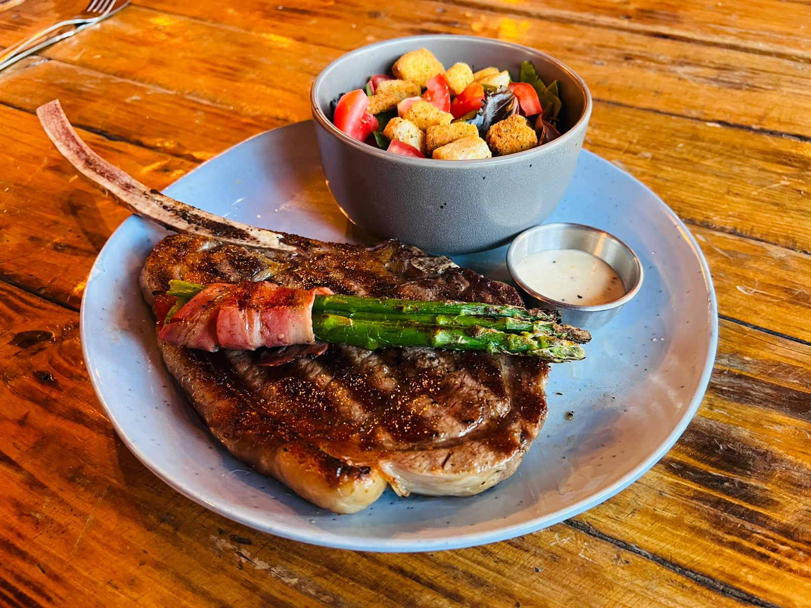
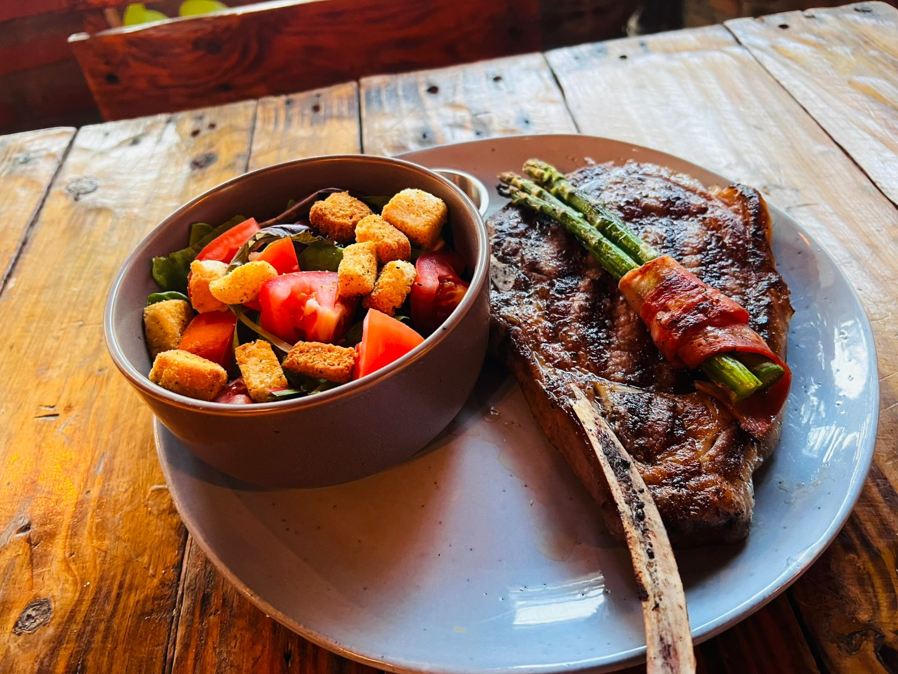

LOS DOS GALLOS
Parrilla, buenos ingredientes y sabores para disfrutar alrededor de la mesa.
MUY PRONTO
Próximamente podrás consultar aquí nuestro menú. Mientras tanto, ven a disfrutar de la experiencia de Los Dos Gallos.


A LA PARRILLA
Buena comida, un ambiente tranquilo y una mesa lista para compartir.